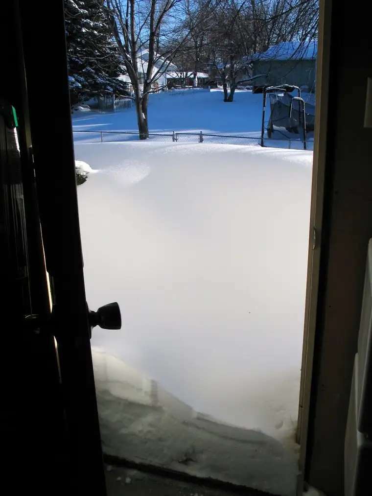
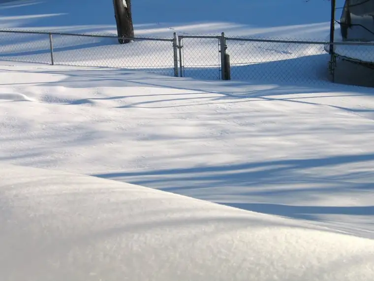
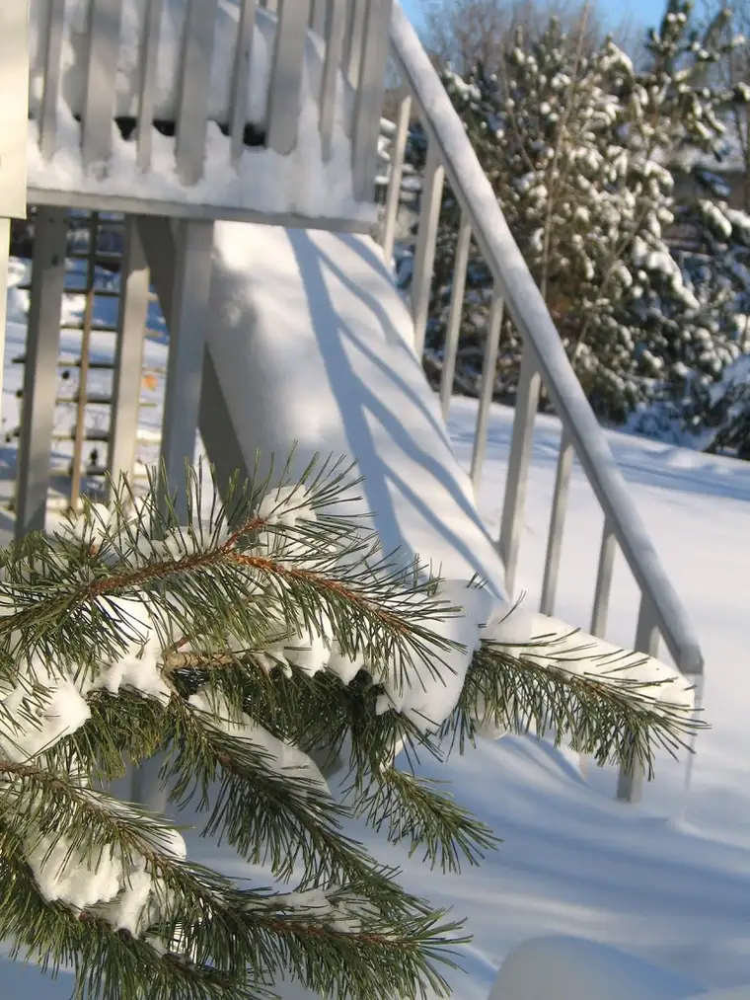
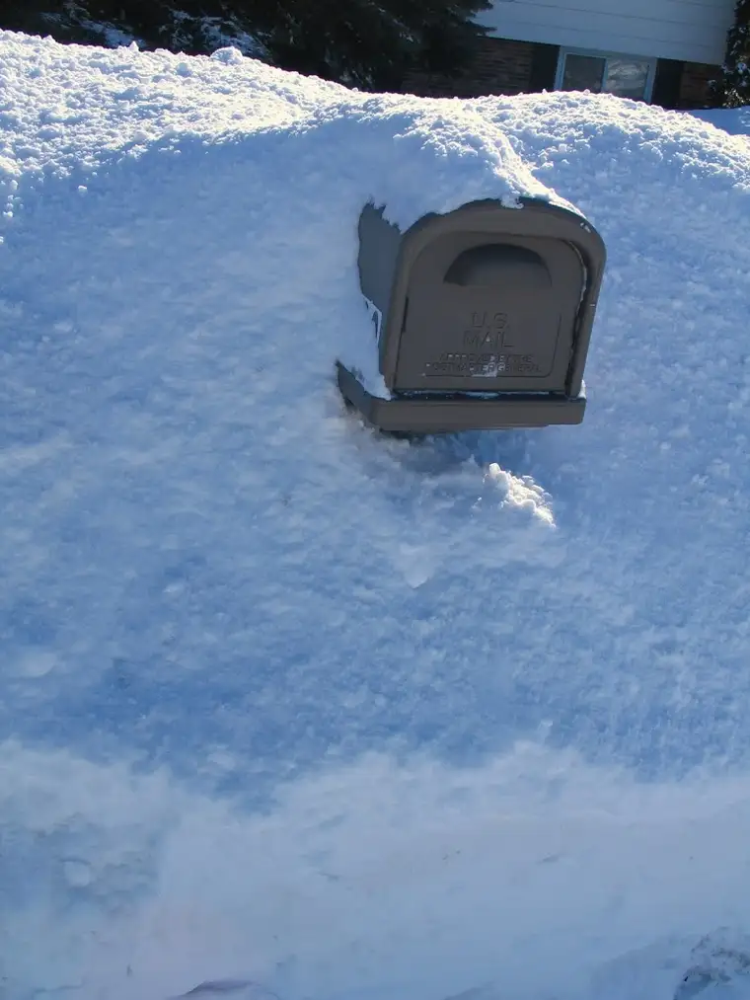
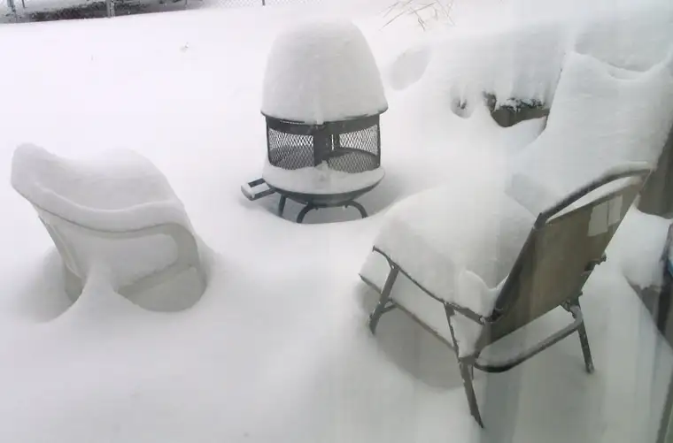
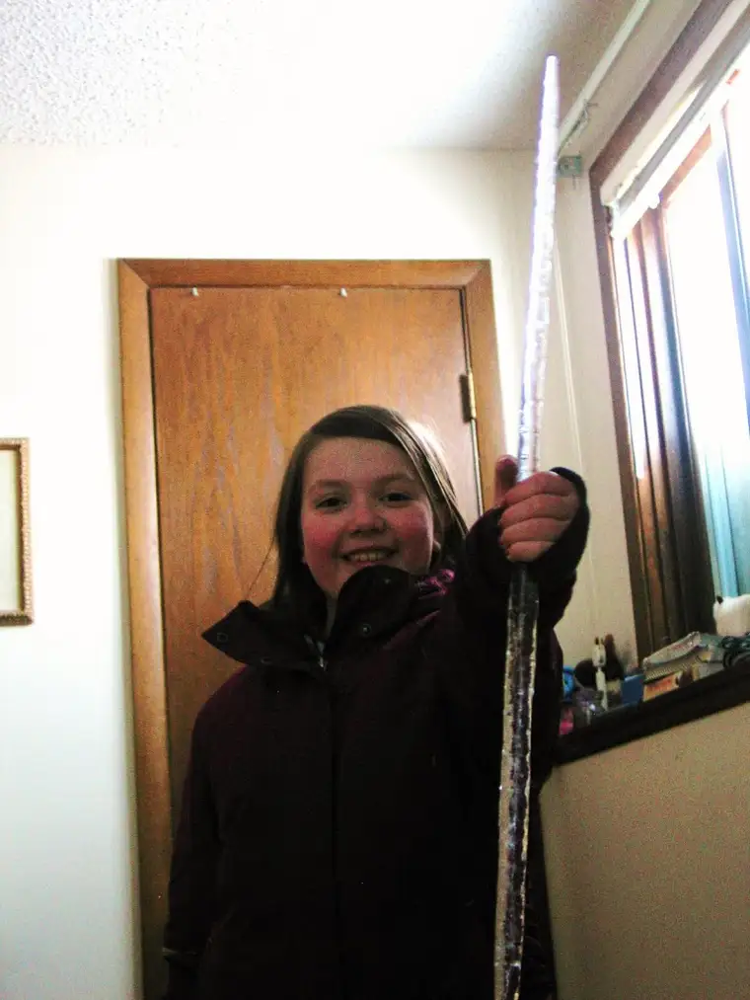

Mama Monday Minis (or Missives, as the case may be)
The powers that be are finally getting real with us, telling us to prepare for battle, that it’s likely to flood here when the snow starts melting in the spring.
Ya think?
    
We’ve watched the snow come, and come, and come this winter. We’ve watched with our eyes half-open, in denial as we have been because we cannot yet emotionally handle the thought of a repeat of last spring. Many here are not fully recovered yet from last year’s spring disaster that swallowed some homes and put all of our lives in chaotic suspension for several months.
{kind=link}
{kind=link}
{kind=link}
{kind=link}
{kind=link}
These pictures tell only a little of the story. What we see when we’re driving around town are lines of hazardous roadway. The snow is piled so high that when we inch out into an intersection to assess oncoming traffic, we risk getting hit. I don’t remember having to deal with snow-pile obstruction like I’ve seen this winter, never in my years as a driver.
Some days, I’m in plain disbelief how the piles are eye-level or higher. Just when I think the skies couldn’t possibly hold any more moisture, more comes down. It comes quietly, but steadily, like downy feathers. But we know not to take it lightly. It is deceptive, this snow. Each new flake that joins the rest poses a threat to us. And the scary thing is that we can’t really fully prepare, because we have no idea just what Mother Nature will do.
Another rather remarkable effect of this year’s winter has been the tremendously huge icicles. Honestly, I have never seen so many of these chilly ice swords cascading down from roofs and even from many of the snow piles themselves.

{kind=link}
As a mother in this unfolding drama, I’ve already begun tapping my options. My friend Mary who hosted us during last year’s flood drama says she’s ready to clear some floor space and fire up the oven for another round of banana bread, should the need arise.
That was really all I needed to hear to let go. If the flood hits as some predict it will, there will be plenty of stress to endure, plenty of sandbags to be filled, plenty of worrying to move through in a few weeks’ time. For now, the best we can do is not deplete our reserves while things are still fairly calm and ask God for mercy. And if not mercy, then grace to endure whatever is to come.
God’s grace is already evident to me through Mary’s repeat offer. I can stay calm for now, even as the snow continues to accumulate, knowing that if the waters rise and threaten to engulf us as last year, a place is being prepared for our safe-keeping.
Perhaps this is why Lent has been such a deeply enriching experience for me these last couple years. Perhaps God knows I will need the life-giving energy I’m receiving now for when my reserves are not quite as plentiful.
We shall see…
{kind=link}
{kind=link}